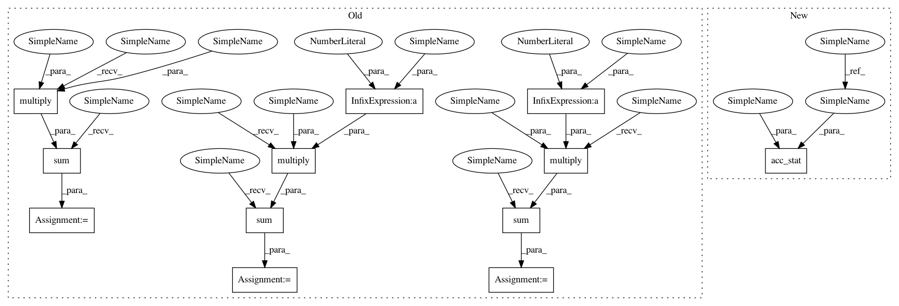

a6ba2cbf662fcb60ea5ab5079e247f3a6cad7957,autosklearn/metrics/classification_metrics.py,,f1_metric,#Any#Any#Any#,152
Before Change
score = np.zeros(label_num)
bin_prediction = binarize_predictions(prediction, task)
fn = np.sum(np.multiply(solution, (1 - bin_prediction)), axis=0)
tp = np.sum(np.multiply(solution, bin_prediction), axis=0)
fp = np.sum(np.multiply((1 - solution), bin_prediction), axis=0)
//print(np.multiply(solution, (1 - bin_prediction)).shape, fn.shape,
// np.sum(np.multiply(solution, (1 - bin_prediction)), axis=0).shape)
// Bounding to avoid division by 0
After Change
label_num = solution.shape[1]
score = np.zeros(label_num)
bin_prediction = binarize_predictions(prediction, task)
[tn, fp, tp, fn] = acc_stat(solution, bin_prediction)
// Bounding to avoid division by 0
eps = 1e-15
true_pos_num = sp.maximum(eps, tp + fn)
found_pos_num = sp.maximum(eps, tp + fp)
In pattern: SUPERPATTERN
Frequency: 3
Non-data size: 12
Instances
Project Name: automl/auto-sklearn
Commit Name: a6ba2cbf662fcb60ea5ab5079e247f3a6cad7957
Time: 2016-01-22
Author: feurerm@informatik.uni-freiburg.de
File Name: autosklearn/metrics/classification_metrics.py
Class Name:
Method Name: f1_metric
Project Name: automl/auto-sklearn
Commit Name: a6ba2cbf662fcb60ea5ab5079e247f3a6cad7957
Time: 2016-01-22
Author: feurerm@informatik.uni-freiburg.de
File Name: autosklearn/metrics/classification_metrics.py
Class Name:
Method Name: f1_metric
Project Name: automl/auto-sklearn
Commit Name: a6ba2cbf662fcb60ea5ab5079e247f3a6cad7957
Time: 2016-01-22
Author: feurerm@informatik.uni-freiburg.de
File Name: autosklearn/metrics/classification_metrics.py
Class Name:
Method Name: bac_metric
Project Name: automl/auto-sklearn
Commit Name: a6ba2cbf662fcb60ea5ab5079e247f3a6cad7957
Time: 2016-01-22
Author: feurerm@informatik.uni-freiburg.de
File Name: autosklearn/metrics/classification_metrics.py
Class Name:
Method Name: acc_metric